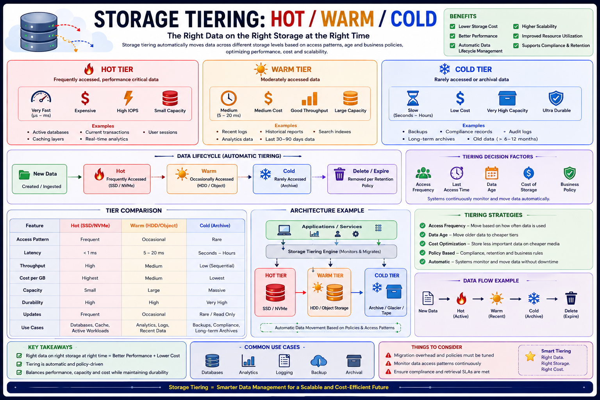

Right data on the right storage at the right cost — Staff Engineer level
The Big Picture
5–10% of data is hot, 20–30% warm, 60–80% cold. Keeping everything on SSDs wastes money. Keeping everything on HDDs kills performance. Storage tiering puts the right data on the right medium automatically.
Storage Hardware Spectrum
| Storage | Latency | Cost | Capacity |
|---|---|---|---|
| DRAM | Nanoseconds | Very High | Low |
| NVMe SSD | Microseconds | High | Medium |
| SATA SSD | 0.5–2 ms | Medium | High |
| HDD | 5–15 ms | Low | Very High |
| Object Storage | 10–100 ms | Very Low | Massive |
| Archive / Tape | Seconds–Hours | Lowest | Virtually Unlimited |
Using a single storage type is never optimal. Tiering uses the right hardware for each access pattern.
The Three Storage Tiers
🔥
Hot Tier
NVMe / Premium SSD
Lowest latency · Highest cost
🌤
Warm Tier
HDD / Object Storage
Balanced cost · Read-heavy
❄
Cold Tier
Glacier / Tape
Lowest cost · High latency
Tier Characteristics
| Feature | 🔥 Hot | 🌤 Warm | ❄ Cold |
|---|---|---|---|
| Access Frequency | Very High | Medium | Very Low |
| Latency | <1 ms | 5–20 ms | Seconds–Hours |
| Cost | Highest | Medium | Lowest |
| Capacity | Small | Large | Massive |
| Updates | Frequent | Occasional | Rare |
| Compression | Minimal | Moderate | Aggressive |
| Hardware | DRAM, NVMe | SATA SSD, HDD | Glacier, Tape |
Data Lifecycle & Migration Policies
Data naturally cools over time. Systems migrate it based on:
Most production systems combine age + access frequency policies. Add a minimum residency time (hysteresis) to avoid frequent oscillation between tiers.
Automatic Tiering — Heat Score
Systems assign every object a "temperature" score and migrate transparently:
Cloud Provider Tier Mapping
| Tier | AWS | Azure | GCP |
|---|---|---|---|
| 🔥 Hot | S3 Standard | Hot Blob | Standard |
| 🌤 Warm | S3 Standard-IA | Cool Blob | Nearline |
| ❄ Cold | Glacier | Archive Blob | Coldline |
| ❄❄ Archive | Glacier Deep Archive | Archive | Archive |
Real-World Examples
Elasticsearch — Index Lifecycle Management (ILM)
Kafka — Tiered Storage
Prometheus + Thanos
Banking Database
Caching vs Tiering — Key Distinction
| Aspect | Caching | Tiering |
|---|---|---|
| Data Action | Copies data | Moves data |
| Duration | Temporary | Permanent (policy-driven) |
| Goal | Improve latency | Optimize cost |
| Eviction | Anytime (LRU/LFU) | Only via lifecycle policy |
| Source still available | Yes | No (data has moved) |
Caching accelerates access. Tiering optimizes storage economics. They are complementary, not alternatives.
Staff Engineer Thinking
Junior
Should we use SSD or HDD?
Senior
How many days should data stay on SSD?
Staff asks
Production Failure Scenarios
SSD Storage Full
Cause: Old data never migrated off hot tier · Fix: Implement automatic lifecycle policies
Slow Analytics Queries
Cause: Frequently queried data demoted to cold storage · Fix: Adjust heat thresholds or cache popular datasets
High Storage Costs
Cause: All data stored on premium SSD by default · Fix: Introduce hot/warm/cold tiering with lifecycle policies
Unexpected Retrieval Delays
Cause: Cold archive retrieval takes minutes/hours · Fix: Communicate SLA clearly or pre-warm required datasets
Tier Oscillation
Cause: Objects repeatedly moving between hot and warm · Fix: Add hysteresis (minimum residency time before migration)
Staff Engineer Decision Framework
| Workload | Recommended Tier |
|---|---|
| Active OLTP database | 🔥 Hot (NVMe SSD) |
| Search indexes (recent) | 🔥 Hot → 🌤 Warm via ILM |
| Recent logs (<30 days) | 🌤 Warm |
| Historical analytics | 🌤 Warm |
| Session / cache | 🔥 Hot (DRAM) |
| Backups | ❄ Cold |
| Compliance / audit data | ❄ Cold |
| Media archive | ❄ Cold |
Key Takeaways
